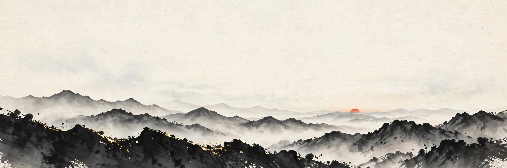
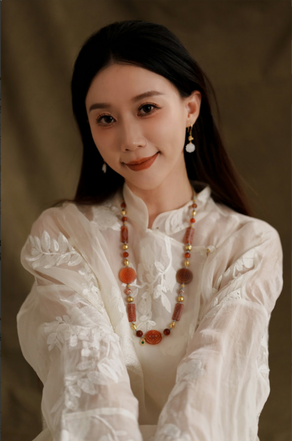
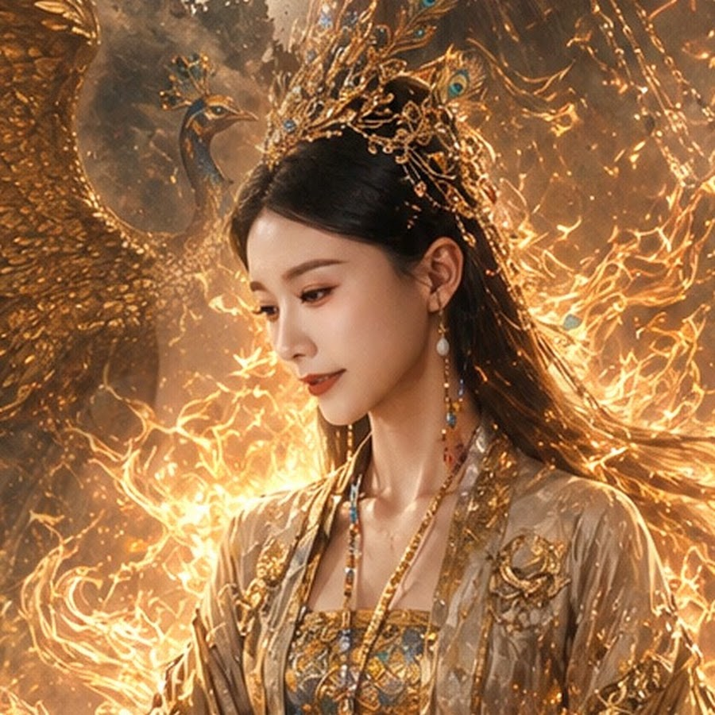
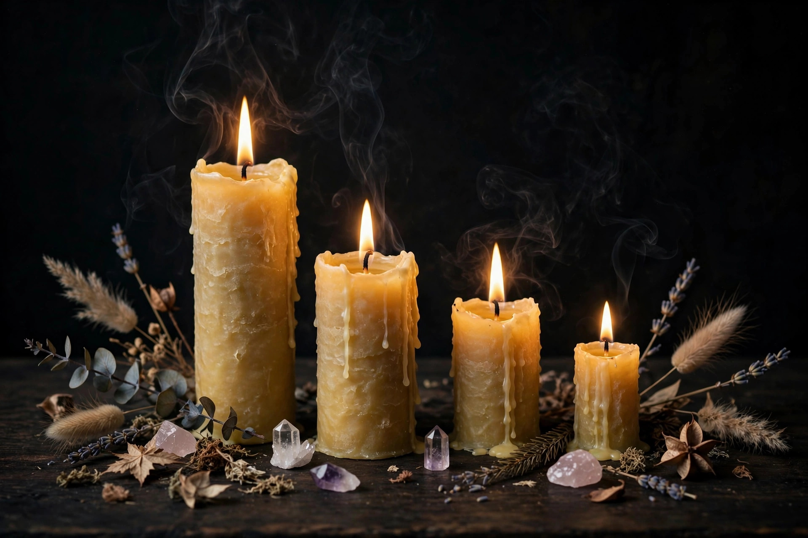

灵魂记忆与潜力唤醒
陌语，灵魂记忆与潜力唤醒，灵魂的能量破局者。这一页把她的体系、全部项目和她自己划下的边界，都写在这里。



蜡烛是天巫体系中最重要、最基础的媒介：须纯天然无杂质（椰子油或大豆油、自然生长的植物元素、晶石），每支按人配置不同的植物元素、单独注入能量。除净化与祈福用的蜡烛由她操作外，其余蜡烛寄到你手里自己操作。先从蜡烛四线看起。
许愿蜡烛的大容量款：150g，含晶石与植物元素，款式随机，没有两支相同。
小容量体验款，约 75g。与 PLUS 版的区别只在容量，适合集中调整某一个方向。
高阶款：一套 3 支蜡烛，配植物、水晶石与能量符纸；一支一支点，不可同时点 3 支。水晶晨晒补充能量、忌正午暴晒。部分按个人状态配水晶小佛或小动物，不是人人有。
蜡烛线最高级别：一套 7 支，对应七灵根——转变、共鸣、直觉、召唤、超越、觉醒、潜力；每根灵根有对应祖灵，点烛是召唤祖灵加持。限量，无法量产。配 1 张心愿卡一起使用。
佛眼蜡烛，非常驻项目，限时限量，等待期不可预计：在观想与静坐中逐步提升修行根基、开启佛眼潜能。哪怕只开一条小小的缝，也足以让人对很多事情想得通透、明了。
运用上古天巫的能力清理灵魂层面的堵塞，还能屏蔽外界持续传来的负面信号，只接收正面信息。净化分 9 大类，每一次只能做 5 个小分项，最好集中处理同一大类——选错项目是风险，所以这一项尤其要先问诊。
祈福蜡烛是加持作用：刚做完可能冲到一个高点，之后像抛物线一样慢慢消耗，但一般不会回到原点。
她的疗愈是空镜：疗愈师是一面干净的镜子——不证明自己、不救赎他人、照过不留痕。好的疗愈，是让人看见自己，而不是让人依赖疗愈师。做法上是深层剥离、重塑与边界重建。
探查脉轮当前的能量状态。先说清：探查所见的画面是卦象，反映的是当前状态，不是严格的前世记录。
透过孩子的表象，去看家庭结构与能量问题——孩子的状况，往往是整个家庭的镜子。
看完清单，下一步是问诊：项目多、选错是风险，先把你的情况说清，确认适合哪一项，再谈预约。问诊走官方助理通道。
先问诊 · 联系官方助理